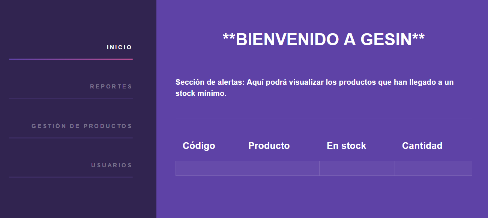
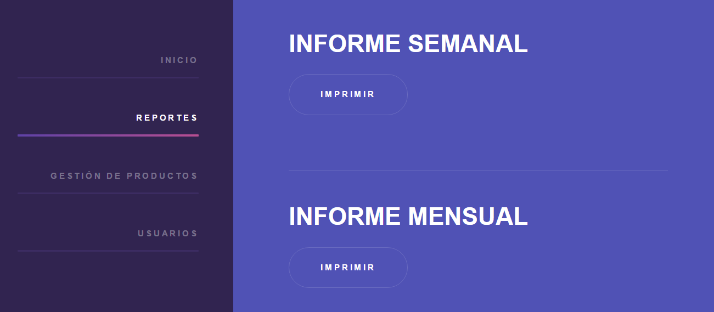

SISTEMA DE GESTIÓN DE INVENTARIOS
Las empresas dedicadas al negocio de comercialización requieren llevar a cabo una adecuada gestión de sus productos. Con este fin nació GESIN; para mantener el control y la trazabilidad de las operaciones efectuadas sobre las existencias de dichos productos, de una manera óptima, oportuna y eficiente.
CARACTERÍSTICAS DE GESIN
Si desea aumentar la productividad de su negocio con la implementación de un sistema de inventario y llevar el control de su almacén de forma segura y ordenada, GESIN es su mejor opción.

NOTIFICACIONES:
A través de una interfaz limpia y ordenada GESIN le notifica automáticamente los productos que en el momento se encuentran con un stock por debajo del asignado por el usuario. Esto le permitirá a la empresa suplir nuevamente sus mercancías a tiempo, aumentando así la satisfacción de sus clientes.
ACCESO DE USUARIOS:
Controle el acceso al sistema con dos tipos de usarios: administrador y usuario normal, cada uno con su respectiva contraseña para la seguridad de sus datos. El sistema implementa mecanismos que ayudan a mantener la seguridad de la información impidiendo el acceso y manejo de información no adecuado.
 INVENTARIO:
INVENTARIO:
Administre los productos que surte en su empresa en el módulo Gestión de Productos. Podrá agregar imágenes, una descripción del producto, categoria, marca, proveedor, el precio de compra y el precio de venta. Categorice sus productos de acuerdo con la dinámica propia de su negocio. Registre sus movimientos contables de compra, venta y devoluciones de productos, de esta manera, podrá visualizar según categoría el saldo inicial, las entradas, las salidas, el saldo final de productos, el valor total de venta y el costo total de su inventario.
INFORMES:
Los Reportes de GESIN le ayudarán en la toma de decisiones en relación con su almacén. Podrá descargar versiones imprimibles del movimiento del inventario semanal y mensual, así como el total de ventas y el costo total actual del inventario.
Para sugerencias o inquietudes contacte a Diana Carolina Chacón López, Tecnóloga en análisis y diseño de sistemas de información (SENA)
-
Dirección
Bucaramanga, Santander, Colombia
-
Email
dcchacon3@misena.edu.co -
Celular
301 420 47 63 -
Redes Sociales